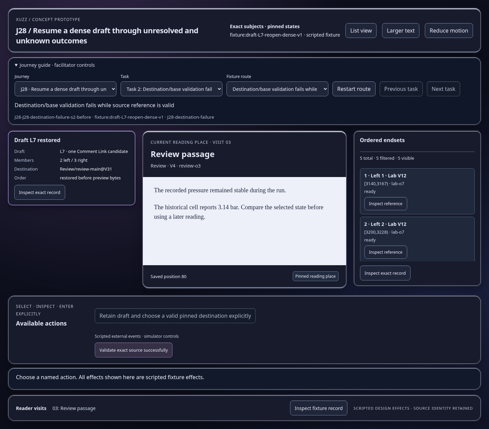
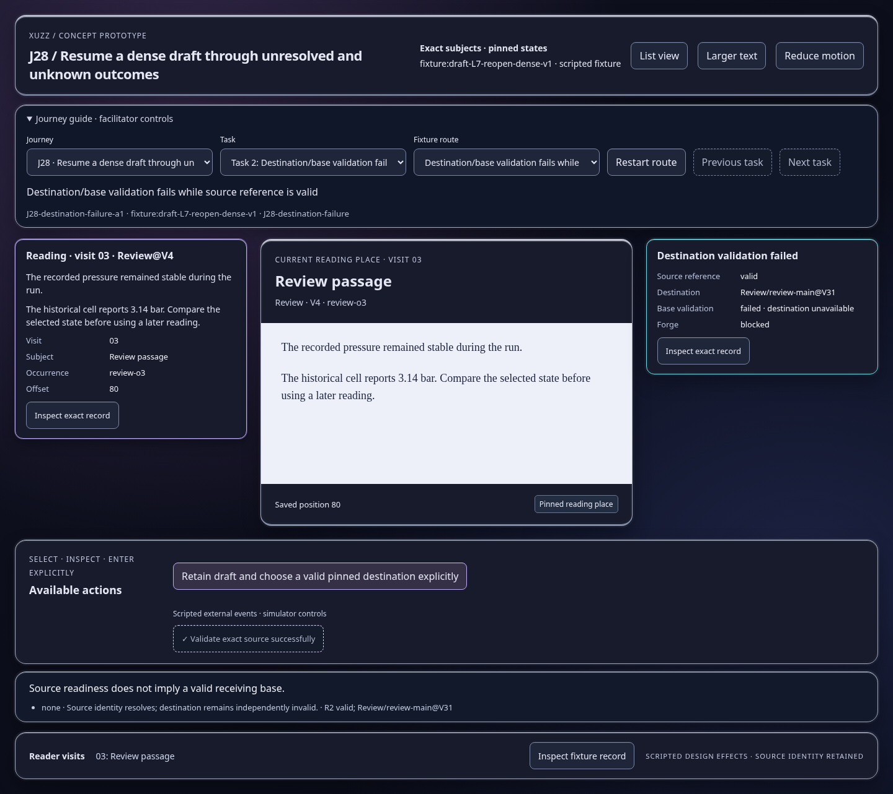
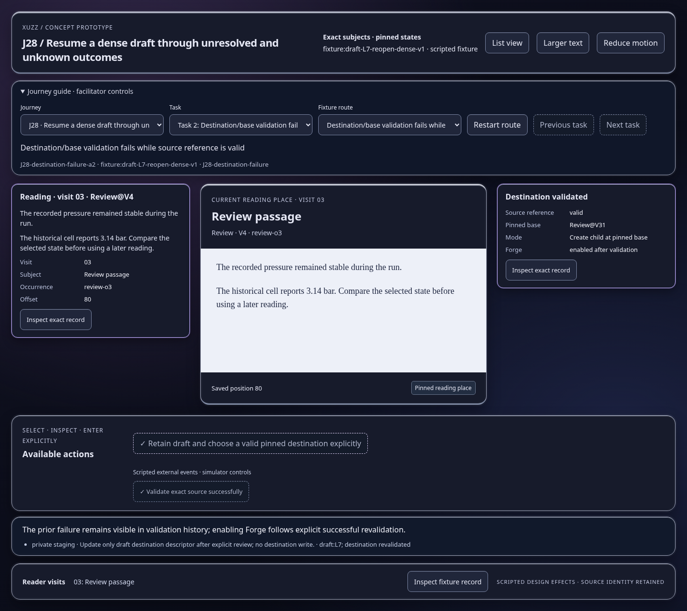

Scripted concept states; inspect the effect and identity trace. Images show actual prototype rendering.

Source readiness does not imply a valid receiving base.
Open this represented state
The prior failure remains visible in validation history; enabling Forge follows explicit successful revalidation.
Open this represented state